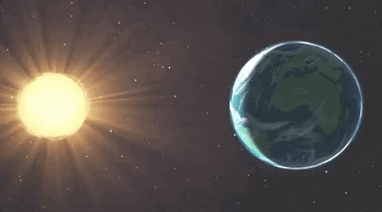
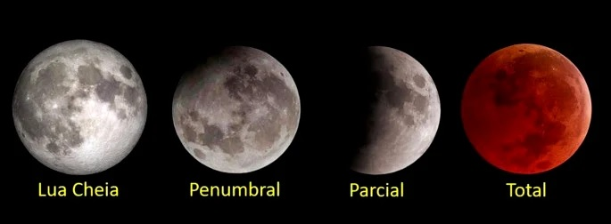
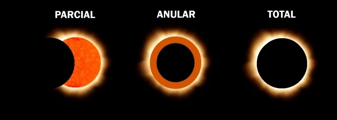
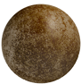
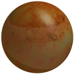
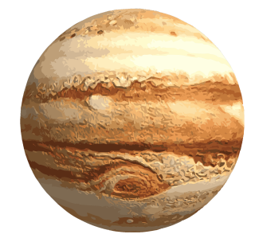
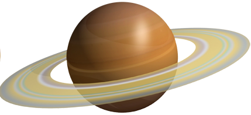

Eclipse
Eclipse é o escurecimento total ou parcial de um astro feito por meio da interposição de um segundo astro
frente à fonte de luz. Existem dois tipos de eclipses: o solar e o lunar. Tanto o eclipse lunar quanto o solar
dependem de um alinhamento das órbitas da Terra, ao redor do Sol, e da Lua, ao redor da Terra; caso
contrário, os fenômenos não ocorrerão.

Eclipse Lunar
O eclipse lunar ocorre quando a Lua entra na região da sombra da Terra, gerada por meio da luz do Sol, e a
sombra da Terra cobre o disco lunar. Caso a órbita da Lua ao redor da Terra fosse alinhada com a órbita da
Terra ao redor do Sol, sempre teríamos eclipse lunar durante a fase da Lua Cheia.

Eclipse Solar
O eclipse solar ocorre quando a lua interpõe-se entre o Sol e a Terra, projetando a sua sombra sobre a Terra.
Nas regiões do planeta onde o Sol é observado sendo completamente tampado pela Lua, ocorre o chamado
eclipse solar total. Nos lugares onde o sol não fica completamente encoberto pela lua, ocorre o eclipse solar
parcial, correspondendo às regiões de penumbra da Lua. Caso a órbita da Lua ao redor da Terra fosse
alinhada com a órbita da Terra ao redor do Sol, sempre teríamos eclipse solar durante a fase da Lua Nova.

Planetas

Mercúrio

Vênus
Terra
Marte

Júpiter

Saturno
Urano
Netuno